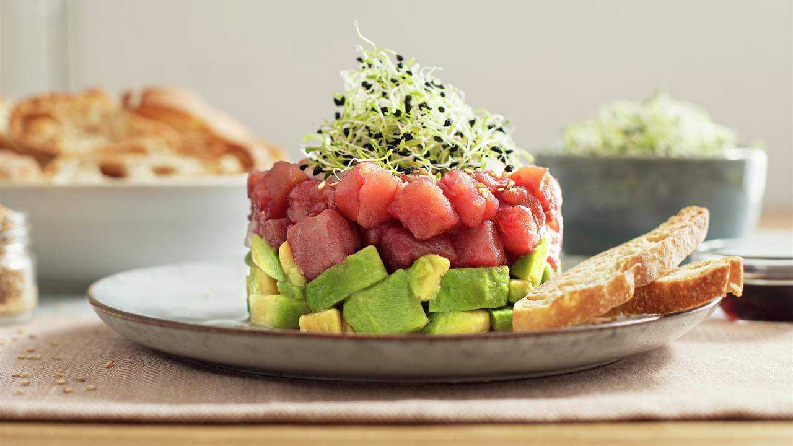
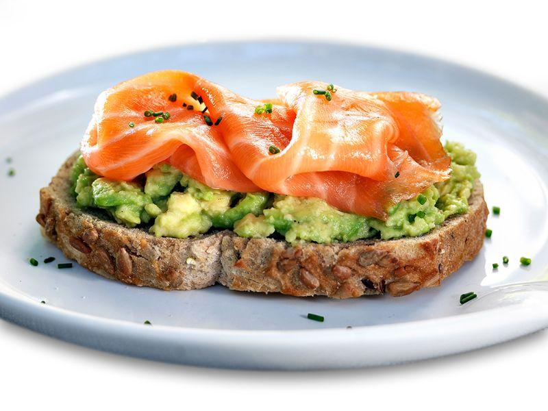
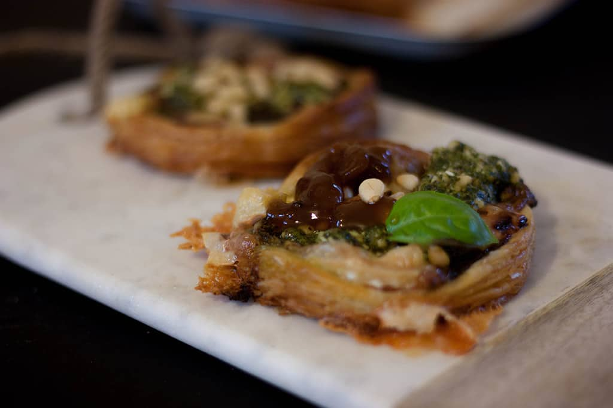

Entradas

Ensalada Mediterránea
Fresca mezcla de verduras y queso feta con un toque de aceite de oliva.

Bruschetta de Tomate
Pan crujiente con tomate, albahaca y un toque de ajo.

Tartar de Atún y Aguacate
Atún fresco marinado con soja y sésamo, sobre aguacate.

Carpaccio de Res
Camarones grillados con salsa agridulce de mango y jengibre.

Tostada de Salmón Ahumado
Tostada de salmón ahumado con mousse de aguacate y lima.

Tartaletas de Queso de Cabra
Tartaletas crujientes con queso de cabra y cebolla caramelizada.